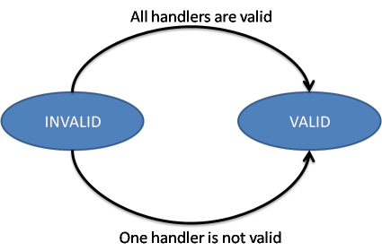
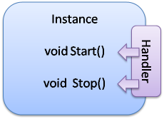
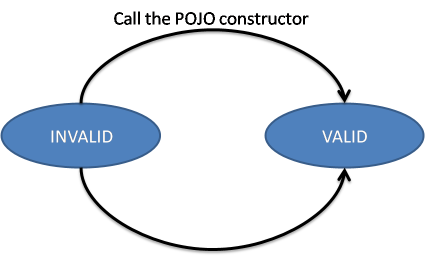

Life cycle callbacksIt is often necessary to create a POJO object as soon the instance becomes valid. Moreover, it is also often needed to be able to stop it nicely. The lifecycle callback handler allows invoking methods (callbacks) on the instance when instance's state changed. For example, it allows invoking a start method when the instance becomes valid and a stop method when the instance becomes invalid. Moreover, this handler allows the creation of immediate component. This page presents how to use this handler. Instance LifecycleIPOJO instances have a very simple lifecycle. This lifecycle contains two states: INVALID and VALID. Once an instance is created, this instance can only be valid if all its plugged handlers are valid. For example, an instance requiring a service (and so using the dependency handler) cannot be valid if the required service is unavailable. Indeed, the dependency handler will be invalid. An instance starts and stops in the invalid state.  Lifecycle callbackThis handler supports two kinds of callback. The INVALID=>VALID callback are invoked when the instance becomes valid (at starting or when an event allows the instance to become valid). The VALID=>INVALID callback are invoked when the instance becomes invalid (at stopping or when an event invalids the instance). 
An exampleLet's take an example. The following class requires a FooService and has two lifecycle callbacks: start and stop. public class Foo { FooService fs; private void start() { // Starting method //... fs.foo(); //... } protected void stop() { // Stopping method if(fs!=null) { fs.foo(); } } } For this class, we define the following component type: <component className="...Foo"> <requires field="fs"/> <callback transition="validate" method="start"/> <callback transition="invalidate" method="stop"/> </component> When an instance of this component type is created, the start method is called as soon as the Foo Service (service requirement) becomes available. If the Foo Service is no more available or when the instance is stopped, the stop method is called. The invoked methods have no argument, but could be private, protected or public. Public methods can be in parent classes too. Moreover, the INVALID=>VALID (validate) method can use service dependencies (the instance becomes valid means that all required services are available); however, in the stop method (invalidate) it is possible that one of these dependency can be null. Indeed, the departure of a service can be the cause of the instance invalidation. Managing threadsOne usage of lifecycle callback is when the instance needs to create threads. Indeed, the thread can be created in the validate callback, and stopped in the invalidate method. The next class shows an example of a class handling a thread by using lifecycle callbacks. public class HelloRequesterImpl implements Runnable { final static int DELAY=10000; HelloService\[\] m_hello; // Service Dependency boolean end; public void run() { while (\!end) { try { synchronized (this) { for(int i = 0; i < m_hello.length; i++) { System.out.println(m_hello\[i\].sayHello("Clement")); } } Thread.sleep(DELAY); } catch (InterruptedException ie) { /* will recheck quit */ } } } public void starting() { Thread T = new Thread(this); end = false; T.start(); } public void stopping() { end = true; } For this component type, the metadata are : <component className="... HelloRequesterImpl"> <requires field="HelloService"/> <callback transition="validate" method="starting"/> <callback transition="invalidate" method="stopping"/> </component> Immediate componentAn instance of an immediate component type is instantiated as soon it becomes valid. It means that, when the instance becomes valid, the constructor of the implementation class is called. This can replace the validate callback. However, it stills a difference between the immediate and the validate callback. The constructor is call only once time. The validate callback is re-called each time the instance becomes valid.  However as there is no destructor in Java, the invalidate callback is necessary if some actions are needed when stopping. Callback on several objectsIf you instance has created several objects (called the implementation class constructor several times), the callback is called on each object in the creation order. |
OverviewGetting Started
User GuideToolsDeveloper Guide
Misc & Contact
|